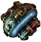

Диэлектрик
Предметы / Обмен
Открыть в интерактивной вики →
| Вес | 5 |
|---|---|
| Цена | 40 000 |
Описание
Фрагмент детектора. Идите к  Фрахлумп, он наверняка знает, что с этим сделать.
Фрахлумп, он наверняка знает, что с этим сделать.
Фрахлумп, он наверняка знает, что с этим сделать.| Фрагмент сторожевого устройства. Иди к Фрахлумпу — он наверняка знает, что с этим делать. |
Рецепт
Обмен
Дроп
Применение
|
Как добыть
Получаем за победу над:
|